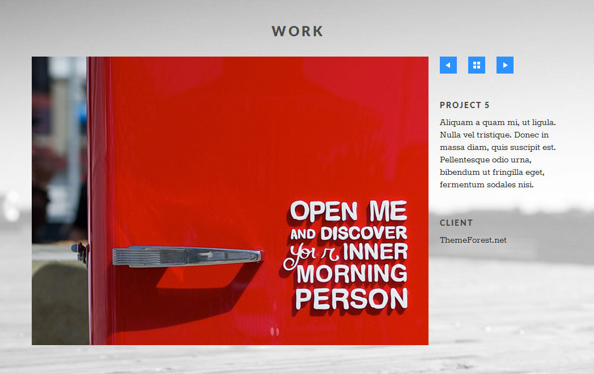

nonus Site Template
Thank you for purchasing our site template! If you have any questions that are beyond the scope of this help file, please feel free to email via my user page contact form. Thanks so much!
HTML Structure
This theme is built upon bootstrap framework and is fully responsive. It adapts to window resolution and looks good on all devices including ipad and iphone.
See for yourself (resize your browser).
Main menu and Site Logo
Main menu is fixed to the top of the viewport and includes a place for a logo and dropdown menu.
Bootstrap implements responsive menu - for example: on ipad and iphone it will be shown after click (resize your browser and see yourself).
<nav id="MainNav" class="navbar sticky">
<a href="#MainNav" class="arrow"></a>
<div class="navbar-inner">
<div class="container">
<button type="button" class="btn btn-navbar collapsed" data-toggle="collapse" data-target=".nav-collapse">
<!-- This button toggles visibility of menu on mobile devices -->
</button>
<a class="brand" href="#MainHeader"><img src="images/logo-small.png" title="companyname" alt="companyname"></a>
<div class="nav-collapse collapse">
<ul class="nav nav-pills">
<li><a href="#MainHeader">Home</a></li>
<li><a href="#Work">Work</a></li>
<li><a href="#Info">Info</a></li>
<li><a href="#Contact">Contact</a></li>
</ul>
</div>
</div>
</div>
</nav>
Mobile Menu
Toggleable mobile menu will appear when browser size < 979px.
Visible
Hidden
Menu fixed to top
By default, but not on mobile devices, menu will stick to top if you scroll past it, if you want to disable that feature remove class ".sticky" from "#MainNav".
<nav id="MainNav" class="navbar sticky">
(...)
</nav>
<nav id="MainNav" class="navbar">
(...)
</nav>
Grid System and Single row structure
The default Bootstrap grid system utilizes 12 columns. It's responsive grid and adapts to viewport. Below 767px viewports, the columns become fluid and stack vertically. The fluid grid system uses percents instead of
pixels for column widths. Each row always include 12 columns (for example span8+span4 = span12 or (span6+offset2)+span4 = span12.
Bootstrap documentation: here
Basic fluid grid HTML:
<div class="row-fluid">
<div class="span8">
<div class="row-fluid">
<div class="span6"></div>
<div class="span6"></div>
</div>
</div>
<div class="span4"></div>
</div>
or
<div class="row-fluid">
<div class="span6 offset2">
<div class="row-fluid">
<div class="span6"></div>
<div class="span6"></div>
</div>
</div>
<div class="span4"></div>
</div>
Icons
Font Awesome - http://fontawesome.io/icons/
HTML markup:
<i class="icon-facebook-sign"></i>
Icon Box
You can add icon box elements to attract attention to a short fragment of text
HTML markup:
<li class="span4 icon-box">
<h4><i class="icon-desktop"></i>Responsive</h4>
<p>Your website can be viewed on many different devices. Laptops, mobiles, tablets...<br>
Class aptent taciti sociosqu ad litora torquent per conubia nostra, per inceptos himenaeos.
</p>
</li>
CSS Files and Structure
We've included style.css which contains all necessary styles.
Main CSS file: style.css includes:
- Font Awesome
- Bootstrap Library
- global
- Flexslider native styles
- Lightbox native styles
- typography
- sections
- header
- navigation
- works
- skills
- info
- team
- contact
- form styles
- validation
- footer
- other styles
- Lightbox style overrides
- Flexslider style overrides
- media-queries
- @media (max-width: 979px) {}
- @media (max-width: 767px) {}
- @media (max-width: 480px) {}
/* ======================== */
/* === START EDIT HERE ==== */
Below you can add your code.
Color Variations
You can change motive color and adapt design to suit your needs. Below you find ready css with the color, just replace rgb(45,145,255) with your own and add it at the bottom of css file.
Remember that some sections (#Skills and #Twitter) have transparent background (rgba(45, 145, 255, .7) by default), change it analogously.
/*
Secondary motive color
Grey should be fine in most cases, feel free to change it to your liking
*/
#Twitter a {
color: #dbdbdb;
}
#Skills h3,
#Twitter span {
color: #dbdbdb;
}
/* Edit motive color below */
a {
color: rgb(45, 145, 255)
}
#MainNav .navbar-inner .container .btn-navbar {
background-color: rgb(45, 145, 255)
}
#MainNav .arrow {
background: rgb(45, 145, 255)
}
#Work .slides li a:hover:before {
background: rgb(45, 145, 255)
}
#Work .full-view nav a {
background-color: rgb(45, 145, 255)
}
form input:focus:invalid:focus,
form textarea:focus:invalid:focus,
form select:focus:invalid:focus,
form input:focus:valid:focus,
form textarea:focus:valid:focus,
form select:focus:valid:focus {
border-color: rgb(45, 145, 255)
}
form input[type="text"]:focus,
form textarea:focus {
border-color: rgb(45, 145, 255)
}
form input[type="submit"],
form input[type="button"] {
background: rgb(45, 145, 255)
}
.flexslider .flex-control-paging li a.flex-active {
background: rgb(45, 145, 255)
}
.flexslider .flex-direction-nav .flex-prev,
.flexslider .flex-direction-nav .flex-next,
.lb-data .lb-close {
background-color: rgb(45, 145, 255)
}
#Skills,
#Twitter {
background: rgb(45, 145, 255); /* IE fallback, it does not understand rgba */
background: rgba(45, 145, 255, .7)
}
Javascript
All javascripts are placed in folder /js. All initial function calls are made in main.js.
This theme uses following Javascript plugins:
- Bootstrap v2.3.0 framework (powerful front-end framework for faster and easier web development)
- jQuery 1.9.1 (A fast javascript library that simplifies how to traverse HTML documents, handle events, perform animations.)
- FlexSlider v2.1
- Lightbox2 (small javascript library used to overlay images on top of the current page)
- jQuery Parallax v1.1.3
Flexslider
We use this plugin to show list of works. Documentation: plugin homepage
This is HTML markup we use:
<section class="preview flexslider row-fluid">
<ul class="slides span12">
<li>
<ul class="row-fluid">
<li class="span4"><a href="work1.html"><img src="images/demo-content/works/thumbnails/work-thumbnail-1.jpg" alt=""></a></li>
<li class="span4"><a href="work2.html"><img src="images/demo-content/works/thumbnails/work-thumbnail-2.jpg" alt=""></a></li>
<li class="span4"><a href="work3.html"><img src="images/demo-content/works/thumbnails/work-thumbnail-3.jpg" alt=""></a></li>
</ul>
<ul class="row-fluid">
<li class="span4"><a href="work4.html"><img src="images/demo-content/works/thumbnails/work-thumbnail-4.jpg" alt=""></a></li>
<li class="span4"><a href="work5.html"><img src="images/demo-content/works/thumbnails/work-thumbnail-5.jpg" alt=""></a></li>
<li class="span4"><a href="work6.html"><img src="images/demo-content/works/thumbnails/work-thumbnail-6.jpg" alt=""></a></li>
</ul>
</li>
<li>
<ul class="row-fluid">
<li class="span4"><a href="work7.html"><img src="images/demo-content/works/thumbnails/work-thumbnail-7.jpg" alt=""></a></li>
<li class="span4"><a href="work8.html"><img src="images/demo-content/works/thumbnails/work-thumbnail-8.jpg" alt=""></a></li>
<li class="span4"><a href="work9.html"><img src="images/demo-content/works/thumbnails/work-thumbnail-9.jpg" alt=""></a></li>
</ul>
<ul class="row-fluid">
<li class="span4"><a href="work10.html"><img src="images/demo-content/works/thumbnails/work-thumbnail-10.jpg" alt=""></a></li>
<li class="span4"><a href="work11.html"><img src="images/demo-content/works/thumbnails/work-thumbnail-11.jpg" alt=""></a></li>
<li class="span4"><a href="work12.html"><img src="images/demo-content/works/thumbnails/work-thumbnail-12.jpg" alt=""></a></li>
</ul>
</li>
<li>
<ul class="row-fluid">
<li class="span4"><a href="work13.html"><img src="images/demo-content/works/thumbnails/work-thumbnail-13.jpg" alt=""></a></li>
<li class="span4"><a href="work14.html"><img src="images/demo-content/works/thumbnails/work-thumbnail-14.jpg" alt=""></a></li>
<li class="span4"><a href="work15.html"><img src="images/demo-content/works/thumbnails/work-thumbnail-15.jpg" alt=""></a></li>
</ul>
<ul class="row-fluid">
<li class="span4"><a href="work16.html"><img src="images/demo-content/works/thumbnails/work-thumbnail-16.jpg" alt=""></a></li>
<li class="span4"><a href="work17.html"><img src="images/demo-content/works/thumbnails/work-thumbnail-17.jpg" alt=""></a></li>
<li class="span4"><a href="work18.html"><img src="images/demo-content/works/thumbnails/work-thumbnail-18.jpg" alt=""></a></li>
</ul>
</li>
</ul>
</section>
and js:
$('#Work .flexslider').flexslider({
slideshow: false
});
custom ajax portfolio
We use custom javascript to dynamically load content.

This is HTML markup we use:
<section class="preview flexslider row-fluid">
<ul class="slides span12">
<li>
<ul class="row-fluid">
<li class="span4"><a href="work1.html"><img src="images/demo-content/works/thumbnails/work-thumbnail-1.jpg" alt=""></a></li>
<li class="span4"><a href="work2.html"><img src="images/demo-content/works/thumbnails/work-thumbnail-2.jpg" alt=""></a></li>
<li class="span4"><a href="work3.html"><img src="images/demo-content/works/thumbnails/work-thumbnail-3.jpg" alt=""></a></li>
</ul>
<ul class="row-fluid">
<li class="span4"><a href="work4.html"><img src="images/demo-content/works/thumbnails/work-thumbnail-4.jpg" alt=""></a></li>
<li class="span4"><a href="work5.html"><img src="images/demo-content/works/thumbnails/work-thumbnail-5.jpg" alt=""></a></li>
<li class="span4"><a href="work6.html"><img src="images/demo-content/works/thumbnails/work-thumbnail-6.jpg" alt=""></a></li>
</ul>
</li>
<li>
<ul class="row-fluid">
<li class="span4"><a href="work7.html"><img src="images/demo-content/works/thumbnails/work-thumbnail-7.jpg" alt=""></a></li>
<li class="span4"><a href="work8.html"><img src="images/demo-content/works/thumbnails/work-thumbnail-8.jpg" alt=""></a></li>
<li class="span4"><a href="work9.html"><img src="images/demo-content/works/thumbnails/work-thumbnail-9.jpg" alt=""></a></li>
</ul>
<ul class="row-fluid">
<li class="span4"><a href="work10.html"><img src="images/demo-content/works/thumbnails/work-thumbnail-10.jpg" alt=""></a></li>
<li class="span4"><a href="work11.html"><img src="images/demo-content/works/thumbnails/work-thumbnail-11.jpg" alt=""></a></li>
<li class="span4"><a href="work12.html"><img src="images/demo-content/works/thumbnails/work-thumbnail-12.jpg" alt=""></a></li>
</ul>
</li>
<li>
<ul class="row-fluid">
<li class="span4"><a href="work13.html"><img src="images/demo-content/works/thumbnails/work-thumbnail-13.jpg" alt=""></a></li>
<li class="span4"><a href="work14.html"><img src="images/demo-content/works/thumbnails/work-thumbnail-14.jpg" alt=""></a></li>
<li class="span4"><a href="work15.html"><img src="images/demo-content/works/thumbnails/work-thumbnail-15.jpg" alt=""></a></li>
</ul>
<ul class="row-fluid">
<li class="span4"><a href="work16.html"><img src="images/demo-content/works/thumbnails/work-thumbnail-16.jpg" alt=""></a></li>
<li class="span4"><a href="work17.html"><img src="images/demo-content/works/thumbnails/work-thumbnail-17.jpg" alt=""></a></li>
<li class="span4"><a href="work18.html"><img src="images/demo-content/works/thumbnails/work-thumbnail-18.jpg" alt=""></a></li>
</ul>
</li>
</ul>
</section>
<section class="full-view row-fluid">
<!-- Work details are loaded here with Ajax from external html files -->
</section>
and js:
/* numbers thumbnails in work list (#Work .slides) from 1 to x */
var workThumbnails = $("#Work .preview ul.slides li a");
workThumbnails.each(function(index, thumbnail) {
var i = index + 1;
$(thumbnail).data("index", i);
});
/* show/hide animation */
function showFullView (){
(...)
}
function hideFullView () {
(...)
}
hideFullView();
function findSiblings (index, list) {
(...)
}
var container = $("#Work > .container");
var box = $("section.full-view", container);
/* Load content with Ajax when thumbnail is clicked */
$("#Work .preview .slides a").on('click',function (e) {
(...)
scrollToAnchor($work);
});
function slide (dir){
{...)
}
$(document).on('click', "#Work .full-view nav a.all", function() {
hideFullView();
(...)
});
$(document).on('click', "#Work .full-view nav a.prev", function(){
slide("r");
return false;
});
$(document).on('click', "#Work .full-view nav a.next", function(){
slide("l");
return false;
});
Lightbox
Lightbox is small javascript library used to overlay images on top of the current page.
After clicking on image fullsize image will show up in an overlay.
To turn on lightbox just add data-lightbox="name-of-your-image" attribute to link with a fullsize version of your image.
Documentation: plugin homepage
This is HTML markup we use:
<a class="span9" href="images/demo-content/works/large/work-large-1.jpg" data-lightbox="image-1">
<img src="images/demo-content/works/middle/work-middle-1.jpg" alt="preview">
</a>
jQuery Parallax
jQuery Parallax is a small javascript library that creates parallax effect on background images.
To turn parallax on we use short javascript code.
For performance reasons we turn off that effect on mobile devices.
Documentation: plugin homepage
js code we use:
$('#MainHeader').parallax("20%", 0.2);
$('#Work').parallax("20%", 0.2);
$('#Info').parallax("20%", 0.2);
$('#Contact').parallax("20%", 0.2);
//.parallax(xPosition, speedFactor, outerHeight) options:
//xPosition - Horizontal position of the element
//inertia - speed to move relative to vertical scroll. Example: 0.1 is one tenth the speed of scrolling, 2 is twice the speed of scrolling
//outerHeight (true/false) - Whether or not jQuery should use it's outerHeight option to determine when a section is in the viewport
and html:
<section id="Work" class="parallax" style="background-image: url('images/demo-content/background-image-1.jpg');">
PSD Files
There are 2 PSD files included in the project.
- 01-nonus.psd
- 02-nonus-hovers.psd
Both PSD files are of course layered, layers are split into groups. If you'd like to change anything in the page layout, please put jpg/png image in HTML/img directory.
Typography
In this theme we use Lato and Rokkitt fonts
This line includes the fonts:
(placed in style.css file)
@import url(http://fonts.googleapis.com/css?family=Lato:900|Rokkitt);
More info: Google Fonts
Contact Form
Template comes with ready to use Contact Form. Before you start using it, please make sure your server:
- uses PHP 5.2+
- your web server (like Apache) is configured to listen on directory form
Configuration
File js/contact-form.js contains javascript responsible for validating and sending messages. You can customize it's behaviour by setting:
- showErrors - should form display validation error messages? (default: true)
- sendingMessage - once submit button is clicked, it's text will be changed to this value (default: Sending...)
- debug - displays debug messages when problems occur. Please make sure that also in send.php $debug = true.
Inside form directory you will find:
-
config.php - Mail configuration which MUST be setup up before sending emails, please make sure that:
- hostname, username and password are properly entered
- in case of problems in sending messages, use $debug = true variable to view any email errors
- contact.html - this template will be used to render email messsage. Please note that special placeholders are available in this file surrounded with {XXX} like {name}. This placeholders will be subsituted will real content received from contact form.
- contact.php - this is where mail is actually being send for contact form
Please make sure that debug variables are set to false on production!
Twitter settings
Template comes with ready to use Twitter Form. Before you start using it, please make sure your server:
- uses PHP 5.2+
- your web server (like Apache) is configured to listen on directory twitter
Configuration
Inside twitter directory you will find config.php.
New Twitter API requires authentication to display tweets from your account. Please generate 4 special keys for your twitter account via https://dev.twitter.com/apps:
- Consumer key (consumer_key)
- Consumer secret (consumer_secret)
- Access token (oauth_access_token)
- Access token secret (oauth_access_token_secret)
Sources and Credits
The following sources and files have been used to build up this theme
- Twitter Bootstrap - http://twitter.github.com/bootstrap/
- jQuery - http://www.jquery.com
- FlexSlider 2 - http://www.woothemes.com/flexslider/
- Lightbox 2 - http://lokeshdhakar.com/projects/lightbox2/
- jQuety Parallax - http://www.ianlunn.co.uk/plugins/jquery-parallax/
- Font Awesome - http://fontawesome.io/icons/
- Google Fonts - http://www.google.com/fonts
Once again, thank you so much for purchasing this theme. If you have any questions, feel free to email me via my user page contact form.